经典CNN梳理
一、前置基础：
深度学习这块，改来改去就是数据和model在改，数据进行一些处理后放进原模型中效果更好则就是idea，或者数据不动，改动模型的一些小结构效果更好又是一个idea
从cifar10分类任务引入卷积神经网络，首先回顾一下卷积神经网络中一些基础的概念。
1.1 感受野：
是指在输入图像上，某层的一个神经元能看到或相应区域大小，换句话说就是在网络最初输入上看到的像素大小。
1.2 作用：
感受野越大，在输入层上看到的区域就越大，可以捕捉到更多的全局特征，也就进而会影响到卷积层或者整个网络的设计架构。
1.3 卷积层(Convolutional Layer)：
卷积到底起到什么作用：
卷积操作就是用一个可移动的小窗口来提取图像中的特征，这个操作可以捕捉到图像中的局部特征而不受其位置的影响
但，更清楚的说明是理解为用一个更小的窗口(特征)，或者说我我们需要的结果这个作为过滤器，挨个滑动去匹配，滑动的每个位置都会计算出一个值，最终匹配程度最高的地方计算出的置同样也会最高，这样也就提取出特征了，而不会受到位置的影响
所以，我觉得就能理解为什么卷积核的英文名是filter，过滤器；再举个我觉得比较生动的例子，现在去
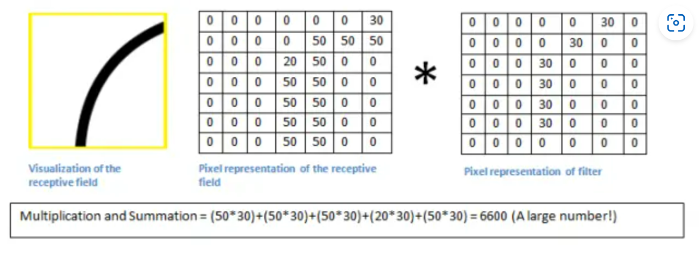
卷积核：每个卷积核在图像上滑动并进行卷积操作，提取局部特征(减少对位置的敏感性)
输出通道：由于每个卷积核在图像上滑动后都会产生一个输出通道，所以卷积层
输出通道个数和卷积核的个数相同，所以得到结论是：往往进行卷积希望通道数变多，但是值得注意：一个feature map和一个卷积核进行卷积的前提是他们的通道数相同，就是说一个feature map 为c个通道，则卷积核的通道数也是c个通道，和这个卷积核就能输出单通道的feature map， 如果有k个这样的卷积核，输出来的就是k通道的feature map
1.4 池化层(Pooling Layer)：
池化就是下采样的作用，即保持特征同时将输入空间维度减小的功能
最大池化：
可以获取局部信息，更好的保留纹理上的特征，如果不关心物体在图片上出现的位置，只关心是否出现，则用最大池化更好
平均池化：
平均池化能够保留整体数据的特征，突出背景信息，也就是说当背景信息都对特征有一点贡献的时候，优先考虑平均池化
池化—>特征图变小：池化不改变通道个数，输入通道和输出通道个数相同
全局池化：
全局池化其实就是池化的窗口和特征图大小相同，即CxHxW，所以经过这一层池化后就是Cx1x1的特征图，再形象一点就是把一个WxH的特征图，每个位置权重都为1/(WxH)的FC层输出一个点
CNN对比DNN：
相同点：都是使用反向传播算法
不同点：网络结构不同，卷积神经网络存在局部连接(这层节点与上一层部分节点连接)和参数共享(指多个节点连接一组相同的参数)
CNN参数更少，但是会有更多的乘法，在GPU上跑的更快
二、LeNet5:
2.1 网络结构：
网上好多的细节不一样，比如有的输入是28X28的灰度图，所以给了padding=2,我这个版本是原论文中的输入32X32的灰度图，所有的padding都是0，但其实就是一个就计算的小差别，经过这一个卷积层都是28X28X6的特征图；
输入：32 X 32的灰度图像，通道数为1
Conv1：5 X 5 X 1(通道数) 的卷积核共6个，stride=1，padding=0，所以经过这层后的特征图通道数是6层，尺寸为28X28, 计算公式如下：

pooling1: 图中的f表示滑动窗口的尺寸，即这个kenel大小是2X2的，池化不改变通道数，按照公式计算得到下一层为14X14X6(通道数)的特征图
Conv2：按道理来说应该是16个5X5X6(通道数必须和输入一致)的卷积核计算得出10X10X16(再次看到输出的通道数和卷积核的个数相同) 的特征图，但原论文中说并不是每个卷积核都和前一层的6个通道都做卷积，而是采用部分的方式如：前六个特征图从上层中三个特征图的每个连续子集中获取输入，也就是说这6个卷积核的 大小是5X5X3(通道数)
pooling2：按照公式继续计算，只改变空间维度的大小，不会改变通道数，所以最后的结果是5X5X16的特征图
Conv3：最后一层卷积层是120个卷积核大小为5X5X16(必须和输入通道数相同)，每个卷积核卷积后的结果都是1X1的特征图，所以总共输出120个通道的特征图，从这里也能看到最后一层卷积其实是展平操作
Linear1:120 X84的全连接层
Linear2: 84 X 10的全连接层，也就是输出了
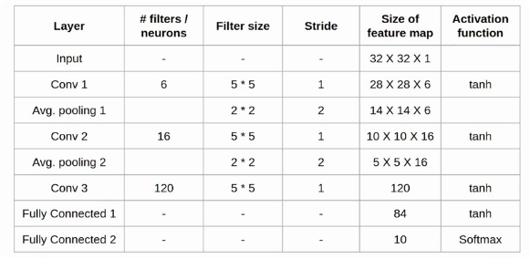
其实LeNet-5表示的有5个学习参数的层
这个网络中的池化都全是平均池化，以及每层卷积后都跟有一个非线性激活(除开输出层是softmax其他的都是tanh)
原论文中写的是三个卷积层和两个全连接层，而有些说法是两个卷积层三个全连接层，其实就是展平操作原论文中使用的是卷积操作；
网络可训练的参数量达到6万
2.2 代码细节：
计算准确率两种写法：
1 | # 方式一： |
比如一个三分类的问题，batch_size为4，则一次输出结果类似这种：
1 | tensor([[0.1, 0.8, 0.3], |
按照方式二，返回概率最大和对应的索引，即按行寻得结果：
1 | (tensor([0.8, 0.9, 0.7, 0.6]), tensor([1, 2, 0, 0])) |
返回的一个元组，第一个数是最大的概率，第二个数是对应的索引下标，也就代表了类别，所以只需要第二个值做判断
展平的方式：
感觉每个人的写法会有一些差异，有些人喜欢在网络层定义的时候就直接展平，有人喜欢在前向传播的过程中展平，这种方式有调用functional函数中Flatten的，也有使用view()来重塑形状的，view中给-1表示自动的调整，前提是元素总数不变
1 | a1 = torch.arange(0, 16) |
统计每个批次的样本数量：
1 | ''' |
2.3 犯错：
卷积成一个1X1的4维张量和展开为一个2维的张量(其实也就是一维向量)，这完全是两码事情，看下面卷积为120维度的1X1的特征图之后依旧是4维张量([batch_size, 120, 1, 1]), 而全连接层全是2维张量([batch, nums])，所以必须有展平的操作，其实展开就是把每一个像素都作为全连接层神经元的输入，比如([batch_size, 120, 5, 5])，展开后就是120x5x5的输入，即全连接层输入层的神经元个数为120x5x5
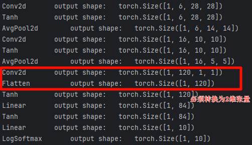
我看了别人很多代码，规范的是把卷积+激活函数作为一层去写的；另外在搭建网络的时候没有展开，直接在forward里面展开(不然就是我前面的问题，不展开无法与全连接层连接)然后继续接网络的前向传播。
三、AlexNet:
3.1 网络结构：
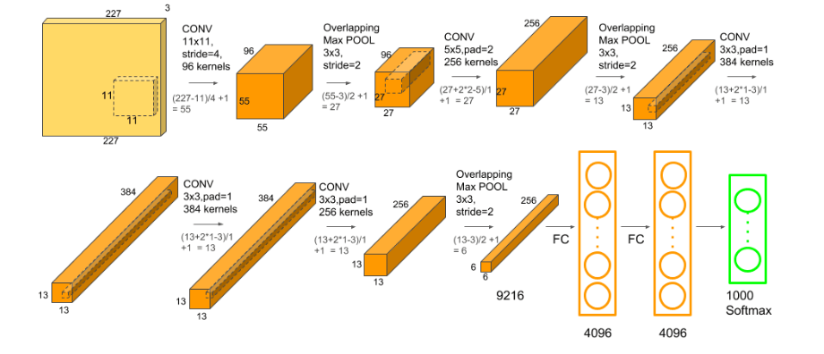
3.2 改进点(相对LeNet5):
图像增强：翻转、随机裁剪、PCA，主要是防止过拟合
dropout操作，随机的使得一些神经元失活(不参与前向和反向传播的过程)，防止过拟合、加快训练
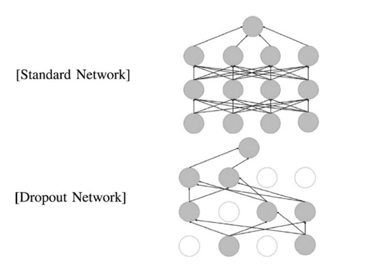
Relu激活函数：更快的训练，且避免梯度消失和梯度爆炸(还可以合理初始化权重)
LRN正则化(局部归一化)：对局部的值进行归一化操作，使其中较大的值变大更大，增强了局部的对比度
重叠池化操作：使得PoolingSize>stride，有一套说辞是重叠池化获得非重叠失去的特征，能够提升模型的精度等等，其实都是先做出来结果，然后讲故事
3.3 总结：
与LeNet有相同之处，也有很多区别；比如适用大尺寸的图像所以使用11X11这种大尺寸的卷积核
使用Relu激活函数，对比tanh/sigmoid激活函数，训练更快且避免梯度消失
dropout随机使得一些神经元失活防止过拟合(用在全连接层)
LRN局部归一化：正则项，防止过拟合
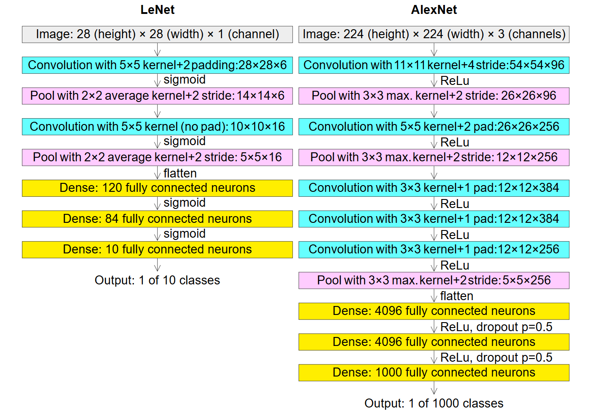
torchsummary专门用来网络可视化的，可以查看网络的结构，参数量，网络大小等等其实也就是用来检查自己搭的网络有没有问题，使用方法是:
1 | summary(model, input_size) |
3.4 需注意的细节：
正因为使用drop操作，所以代码中必须添加训练模型的代码，反正使用pytorch框架是必须这样操作，我训练的准确率一直不动，我还纳闷为什么，所以为了规范以及避免再次这样的事情，要设置train和eval模式
dropout层只能在训练中使用，不能用于测试的过程
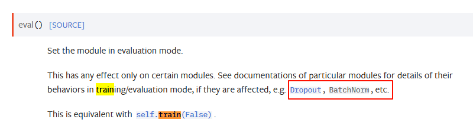
我服，是我学习率设置的0.01太大了一直准确率在10%也就跟猜一模一样，我找各种原因，改成0.001就86%的准确率了
损失曲线：一般来说都是记录一个epoch来画的，当然其他也可以，不过我一般就喜欢找最标准的整，但是因为这个本来没那么多标准的，网上敲的各式各样，都行
四、VGG16
4.1 网络结构：
vgg有很多系列比如vgg11和vgg19后面的数字表示参数层的个数
主要是使用了块的网络，可移植性强，虽然比赛输给了GoogleNet但是，它被更多的用于作为网络骨架的特征提取
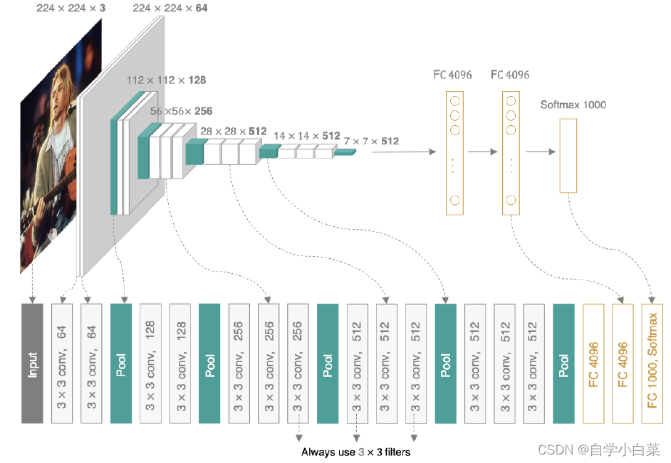
vgg16使用一个块来像搭积木一样搭建网络，全部使用3X3步幅和填充都为1的卷积核，池化采用2X2且步幅为2的核，一层就是一个块；
在全连接层也用了dropout随机使得神经元失活，防止过拟合
4.2 两个3X3的卷积核代替一个5X5的卷积核：
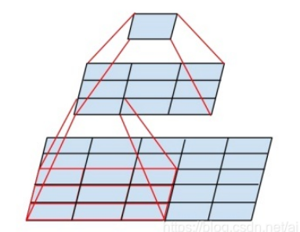
比如对于下面这个5X5的特征图，用5X5的卷积核得到是一个点，而使用33的卷积核，首先第一个卷积核把下面的5X5变成一个33的，然后再一个3X3的卷积核直接变成一个点
也就是说，感受野相同，但两个33的卷积核的更少，且小卷积核卷积*整合了多个非线性激活层，代替单一的非线性激活层，增加了判别能力
4.3 不收敛的原因：
权重初始化有问题，就会出现梯度爆炸或者梯度消失的问题导致不收敛，初始化如下：
1 | # 合理初始化权重，不然就是一轮下来没效果10%的准确率 |
batchsize设置不合适(一般是太小的原因)也会导致不收敛的问题，因为不排除这样的情况：因为size太小，两个batch的差距有点大，两个batch更新的方向是相反的，会有抵消的情况
学习率：看李沐老师的代码里面给的是0.05，然后补了一句这里的学习率比AlexNet大，我就以为是我学习率太小了(0.001)，所以训练一直不动的原因，但是我这次把学习率还是依旧设置的0.001(Adam)，添加了一个权重初始化并把batchsize放到64了，然后效果就好了，直接上90%的accuracy，我就很离谱，不懂这个怎么设置学习率调参。
训练的步骤：先梯度清零—>前向传播计算损失—>反向传播—>梯度更新
调参难受：
我好不容易加上凯明初始化权重+大batchsize，用学习率为0.001有90%的效果，但是学习率改为0.002就第一轮86%，后面全面accuracy=10%过拟合了，，，
五、NiN：
5.1 网络结构：
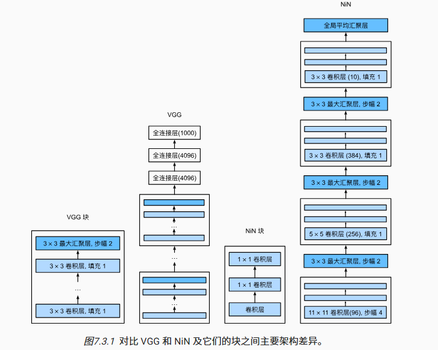
很明显NiN网络也是收到了Vgg块的影响，同样采用一个NiN块以搭积木的方式搭建网络。
NiN块即三个卷积层放一起，后面两个都是1x1的卷积层(无填充，默认步幅，不改变尺寸和通道，也就相当于逐像素全连接层)，第一个卷积层就根据需求指定
从最右边NiN的结构可以看到每个NiN块的第一层卷积的形状(11x11, 5x5, 3x 3)都和AlexNet相同，以及输出通道数96，256， 384也相同肯定是从中受到启发参考了一下，然后每个块后面接一个池化进行下采样。
5.2 创新点:
取消了全连接层，因为使用全连接层可能会完全放弃特征的空间结构，让输出通道数和类别数相同，使用全局最大池化后的结果作为输出
这样能够减少因为全连接层参数过多带来的过拟合，减少模型参数提升了模型的鲁棒性
5.3 细节：
同样使用了dropout操作防止过拟合，这里具体的作用是随机扔弃特征提取层的输出
六、GoogLeNet：
6.1 网络结构：
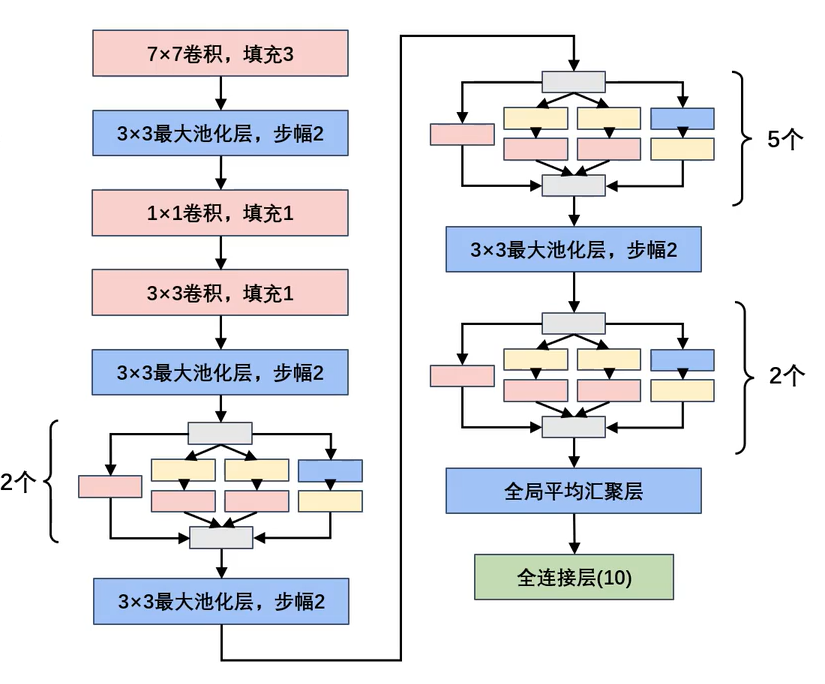
我简化了两个辅助分类器，因为感觉初学没有必要，这两个辅助分类器主要是用来因为链式求导，解决一下梯度消失的问题
就很奇怪，googlenet中inception块之前的卷积这么算出来尺寸都是小数，然后向下取整才得到常用的图像尺寸，然后他这个inception模块设计的还是太巧妙了，模型看起来比vgg16复杂多了，但其实参数量比vgg16小一个量级的(跑起来快多了，爽死），当之无愧的冠军！！！
6.2 创新点：
多尺度卷积：
就认为组合不同的大小卷积核，能够采集到更有效的特征什么的(多尺度卷积提取不同特征)，主要作用是：是挖掘了1 1卷积核的作用，减少了参数，提升了效果；二是让模型自己来决定用多大的的卷积核(1x1,3x3，5x5）就直接自己选的。
1X1的卷积核:
主要用来调整通道数，也就能减小网络参数：举个例子：输入为28X28X192，经过96个1X1X192的卷积核(s=1, p=0)输出为28X28X96的特征图，再经过128个3X3X96的卷积核(s = 1, p=1)输出为28X28X128的特征图，参数为1X1X192X96+3X3X96X128=129024，如果就是直接经过经过128个3X3X192的卷积核，参数为3X3X192X128=221184，所以就是主要用来减少网络参数，(如果这里不是96个X1X192的卷积核,而是10000个，参数也会上涨，所以看你怎么使用)
块的思想:
并行filter将输入特征提取并在通道上进行串联合并构成下一层的输入，然后inception块层层叠加，使用了9个inception块，inception块由四条并行的路径组成，四条路径都使用合适的填充使得输入和输出的高和宽一致(也就是分辨率一样)，通道数可能有所不同。
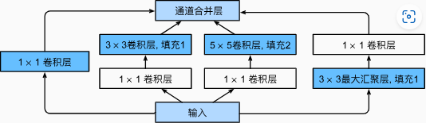
融合连接方式：
是把尺寸相同的的特征图的通道叠加连接，只需要保证尺寸相同(和后面的Resnet很不相同)
全局平均池化层(GAP):
把一个特征图每个通道都平局池化为一个像素点，比如32X32X128的特征图直接全局平均池化为128的向量，优点是可以使得输入图像尺寸更加灵活(因为只看通道数)，以及防止过拟合(因为展开的向量小了很多很多)，缺点是很明显丢失了很多重要的信息(直接将那么大尺寸的一张图变成一个像素点)，以及可能有梯度消失和梯度爆炸
pytorch框架里面最大池化层默认的stride和尺寸大小一样，而卷积层默认步长为1，这就很坑，如果你上面卷积层的步长为1，你默认不写，下面的池化层步长是1，你不写就遭殃咯，调死你！！！
6.3 细节：
pytorch框架里面最大池化层默认的stride和尺寸大小一样，而卷积层默认步长为1，这就很坑，如果你上面卷积层的步长为1，你默认不写，下面的池化层步长是1，你不写就遭殃咯，调死你！！！
基本上是3分钟一轮，快很多
学习率：开始是0.001(10%正确率)我以为是太小，调0.01发现还是不行，结果看网上的学习率给到0.0003了
6.4 后续的改进：
Inceptionv2的改进：卷积层后面接BN层，以及用两个3X3的卷积层代替5x5卷积层（继续减少参数量) 也就是小卷积核串联代替大卷积核的方式，示意图如下在右图：
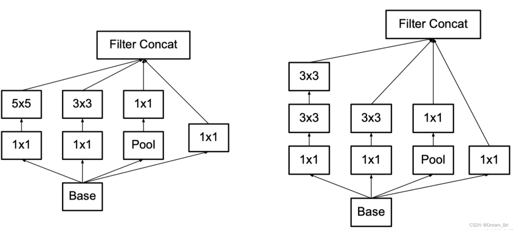
而后面的Inceptionv3的改进，又使用了一种非对称的卷积方式，将一个nxn的卷积划分为1xn和nx1的卷积，但是这种方式在网络的前期效果不好，得往后靠，主要是减少参数量的作用。
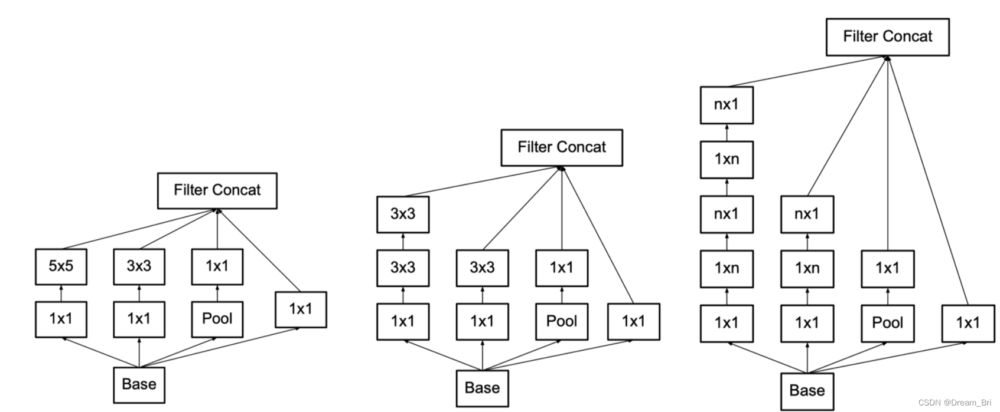
七、ResNet-18
7.1 网络结构：
残差模块：
简单粗暴的理解就是，残差块的输出为h(x) = x + f(x)，也就是说始终保留有用的信息x，以致于效果不会比之前的浅层网络差；不再是直接学习映射而是学习一个与估计值的差值，而是去学一个f(x) = h(x) - x也就残差的由来
残差块的理解这一篇实在到位ResNet-18超详细介绍
原论文讲解：ResNet 原论文讲解
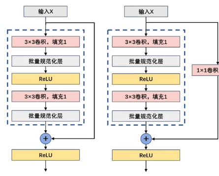
整体结构：
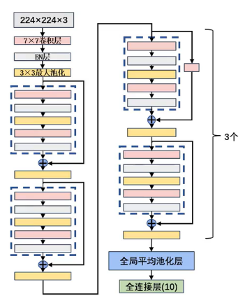
在残差块这样的结构引入之前，如果一个神经网络模型的深度过深，就容易出现梯度爆炸和梯度消失的问题(因为是链式求导，网络加深可能导致指数型的爆炸或消失)，或者模型过深也会出现模型退化的问题
ResNet中提出的BN解决了梯度消失和梯度爆炸的问题，不用再小心翼翼的设置权重初始化(原来的作用也是解决梯度消失和爆炸)(BN过后的值都是一样的)，而设置的残差模块也解决了深度过深模型退化的问题(同样也解决梯度的问题)。
7.2 为什么需要归一化：
消除量纲的影响或者不同范围值的影响，归一化缩放到统一尺度上，同时加速网络的收敛；比如在一个图片中有一部分的像素值特别高(背景很亮那种）但又不是我需要关注的(比如关注刚好是条黑狗），虽然梯度更新会将背景很亮的一块权重变小，但是因为物理值太大点，还是会对结果很有影响，意思就是如果量纲不同有些数据太大了会让模型被这些极端值所影响。
批量归一化：
在此之前一般都是只在输入层上对数据归一化，但是ResNet中在中间数据也进行归一化，也就是一个batch进行归一化，因为输入层归一化后，经过一顿操作数据发生变化又需要调整，在此之后很多网络都是卷积后添加批量归一化
2024.11.13回来再体会BN层，是因为前一层的训练过程参数变化，会导致后面部分输入的参数分布会发生变化，也就是论文中的：“Internal Covariate Shift”问题
具体处理方式：求均值+方差+归一化，额外增加与尺度变换和偏移，也就是y=kx+b的线性变化，增加的两个参数k和b需要训练得到合适的数值
既然使用了批量归一化，建议训练的batch也用大一点，这样接近整个训练集的均值和方差
7.3 心得体会：
写代码才体会到设计的精巧之处：如果不需要改变尺寸和通道数，就直接卷两层然后和原始的X相加，如果需要改变尺寸或者通道数，需要设置的地方就是将第一层卷积旁边的1X1设置的卷积核数量和步长设置相同卷积核和步长(具体多少根据需求），输出的结果尺寸通道信息也相同，然后左边的再多经过归一化和卷积操作(这里直接设定死，不会改变第一层卷积核输出的尺寸通道信息)
在残差块代码中就只需要指定输入的通道数和输出的通道数，然后设置strides(输出的尺寸是原size // stride)
解决梯度消失或者爆炸的问题常用方式：合理初始化权重、relu激活，升级结构
7.4 网络总结对比：
AlexNet中使用了dropout，resnet丢弃dropout使用batchnormalnize，这两个处理都必须用模型的train模式和eval模式控制
ResNet结合vgg16的一直使用3X3的卷积核，也有结合Googlenet的1X1卷积核(用来减少参数量)，ResNet和Googlenet看上去都很复杂，但参数量都比vgg16这个看上去简单的网络要小很多(少了几乎10倍)，训练时间也短了很多
ResNet连接和Googlenet叠加通道不同，ResNet要求尺寸和通道都必须一样，平行的叠加融合
八、DenseNet
DenseNet 与 ResNet都是在计算机顶会CVPR上发表的，前者时间是2017年后者是2015年，DenseNet相当于是ResNet的一个改良版，把直接后面的输入和输出按通道平行融合也就是add(即尺寸通道数必须相同）改成了输入和输出直接在通道上连接也就是concatenate(跟GoogLeNet通道连接相同， inception块是分四路融合，在运算的过程中通过调整填充和步幅保持四路输出的尺寸不变，然后通道数叠加)
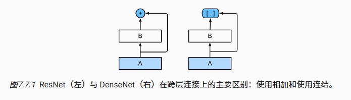
ResNet是做值的叠加，通道数是不变的，DenseNet是做通道的合并，可以这么理解，add是每个特征图下的信息量增加了，但描述图像的维度本身并没有增加，所以总的信息量增加了，这是对图像的分类有益的，而concatenate是通道数的合并，每一层的特征图的信息量没有变，变的是通道数变多了
卷积块：
在RestNet中的卷积块的形式：“卷积 + 归一化 + 激活函数” ，在DensNet中改成了“归一化 + 激活函数 + 卷积” ，这里的卷积还是3X3且填充为1，且一个这样的卷积块就一层卷积，所以不会改变尺寸信息，我们仿照ResNet18做一个简单版的DenseNet，用四个稠密块(每个是由四个卷积块组成)搭建完成
稠密块：
一个稠密块是由多个上面的的卷积块组成的，每个卷积块使用相同数量的输出通道(nums_channel)，仿照ResNet18，我设置一个稠密块中有四个卷积层，也就是有四个卷积块组成一个稠密块。
因为这里的卷积层不会改尺寸信息，每一个卷积块都会按照concat的方式把特征图连接起来，所以经过这个稠密块之后通道数会增加4nums_channel，也就是说*卷积块的通道数控制了相当于输入通道数的增长，所以也被称为增长率
过渡层：
因为使用稠密块的方式会使得特征图的通道数变的很多，所以这里使用了1X1的卷积核来减小通道数，同时使用size和stride都为2的平均池化使得特征图的宽高减半，降低模型复杂度。
即过渡层：批量归一化—> 激活函数 —> 1X1卷积—>平均池化
九、迁移学习的思路：
一个常见的误解没有谷歌那样巨量的数据，我就无法训练出一个非常好的模型，其实可以用预训练模型(在其他庞大数据集上训练完成）结合自己的数据集对模型进行微调的过程，比如在imagenet这样庞大的数据集上训练的分类模型，我拿去做其他的分类；
用下图举个例子， 在一些底层的网络提取的特征诸如线条的简单特征或者识别各种纹理信息，就可以冻结(反向传播不再修改)，这样比随机初始化的效果要好，我仅需关注高层进行微调，比如我直接拿在imagenet上训练完成的vgg16做cifar10分类，仅修改最后一层输出层为10，同样也能获得很好的效果。
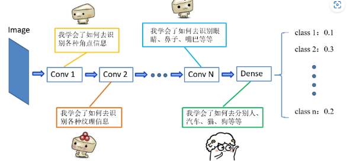
精髓在于：浅层卷积层学习到的线条，纹理信息等等都是较为通用的信息，这信息可以在本网络使用，同样也适用于其他类似任务的网络。